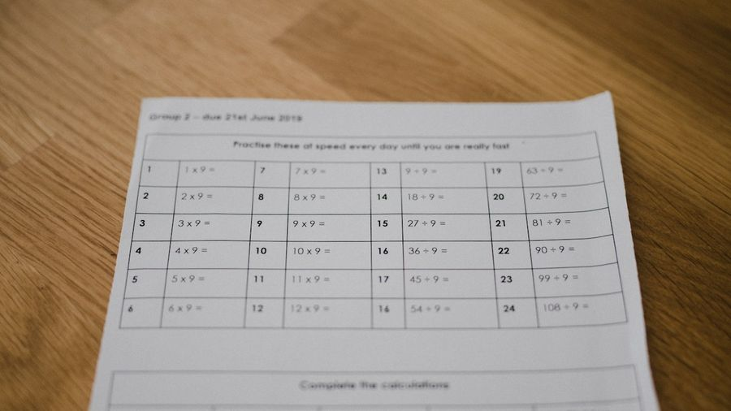
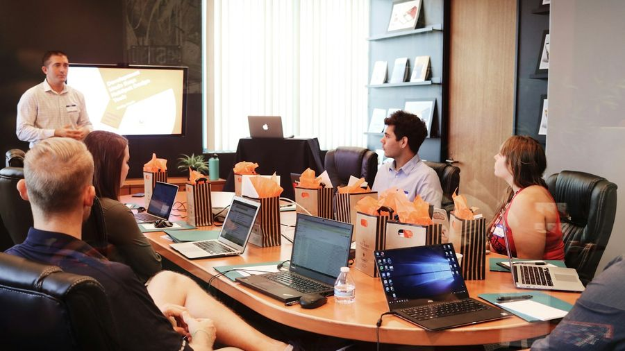
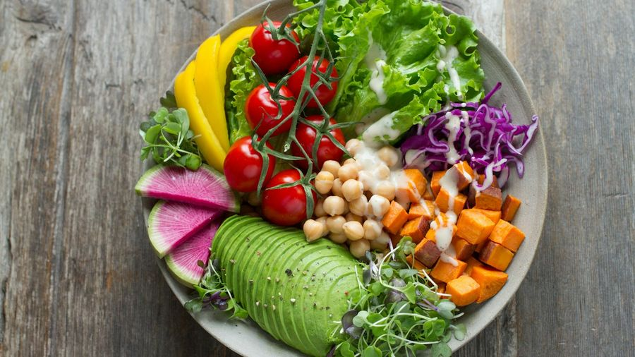

Grammatikfokus
obwohl, trotzdem, dennoch, zwar … aber, trotz – trotz eines Hindernisses passiert etwas. Bedeutung und Satzbau Konnektor für Konnektor. 🌧️
Die Regel in 3 Schritten
Ein Hindernis ist da – trotzdem passiert etwas. Die Bedeutung ist gleich, der Satzbau ist je Konnektor anders.
1️⃣ obwohl → Nebensatz, Verb ans Ende
„Obwohl es kalt ist, gehe ich raus.“
Nach obwohl steht ein Nebensatz – das Verb rutscht ans Ende. Der Nebensatz kann vorne stehen (dann Hauptsatz mit Verb zuerst) oder hinten: „Ich gehe raus, obwohl es kalt ist.“

2️⃣ trotzdem / dennoch → Hauptsatz, Verb auf Position 2
„Es ist kalt. Trotzdem gehe ich raus.“
trotzdem und dennoch sind Adverbien. Stehen sie auf Position 1, kommt das Verb direkt danach (Position 2): „Trotzdem gehe ich …“. dennoch klingt etwas formeller.
3️⃣ zwar … aber / trotz + Genitiv
zwar … aber: zwei Hauptsätze – erst die Einräumung, dann der Gegensatz: „Es ist zwar kalt, aber ich gehe raus.“
trotz + Genitiv: Präposition mit Nomen: „Trotz des Regens gehe ich raus.“
| Konnektor | Satzbau | Beispiel |
|---|---|---|
| obwohl | Nebensatz, Verb am Ende | Obwohl es regnet, gehe ich raus. |
| trotzdem | Hauptsatz, Verb auf Position 2 | Es regnet. Trotzdem gehe ich raus. |
| Konnektor | Satzbau | Beispiel |
|---|---|---|
| dennoch | Hauptsatz, Verb auf Position 2 (formeller) | Es war teuer. Dennoch habe ich es gekauft. |
| zwar … aber | zwei Hauptsätze (Einräumung + Gegensatz) | Es ist zwar teuer, aber es lohnt sich. |
| Konnektor | Satzbau | Beispiel |
|---|---|---|
| trotz + Genitiv | Präposition + Nomen (Genitiv) | Trotz des Regens gehe ich raus. |
| obwohl ↔ trotz | Nebensatz ↔ Präposition | Obwohl es stürmt = Trotz des Sturms. |
| dennoch / trotzdem | auch im Mittelfeld möglich | Ich habe es dennoch gemacht. |
🎡 Drehrad
Beispiele im Kontext
Mehrere Sätze pro Konnektor aus dem echten Alltag + ein Mini-Dialog zum Aufklappen. Achte auf die Position vom Verb! (Niveau oben umschalten.)
🎭 Mini-Dialog
A: Kommst du mit raus?
B: Klar, obwohl es regnet, macht es Spaß.
🎭 Mini-Dialog
A: Bei dem Schnee fährst du Rad?
B: Ja, trotzdem fahre ich – das geht schon.
🎭 Mini-Dialog
A: Du siehst erschöpft aus.
B: Stimmt, aber obwohl ich müde bin, mache ich weiter.
🎭 Mini-Dialog
A: Ist das nicht zu teuer?
B: Schon, trotzdem nehme ich es.

🎭 Mini-Dialog
A: Alles ok vor der Prüfung?
B: Obwohl ich viel gelernt habe, bin ich aufgeregt.
🎭 Mini-Dialog
A: So kalt und ihr geht raus?
B: Ja, trotzdem machen wir einen Ausflug.
🎭 Mini-Dialog
A: War das nicht zu teuer?
B: Dennoch war es die richtige Entscheidung.
🎭 Mini-Dialog
A: Lohnt sich das Hotel?
B: Es ist zwar günstig, aber top.

🎭 Mini-Dialog
A: Hat er wirklich bestanden?
B: Ja, dennoch hat er es geschafft.
🎭 Mini-Dialog
A: Wie findest du die Stadt?
B: Sie ist zwar laut, aber ich liebe sie.

🎭 Mini-Dialog
A: War der Job hart?
B: Ziemlich, dennoch war es gut.

🎭 Mini-Dialog
A: Wie war der Urlaub?
B: Zwar kurz, aber genau richtig.
🎭 Mini-Dialog
A: War die Wanderung hart?
B: Obwohl es steil war, hat es sich gelohnt.
🎭 Mini-Dialog
A: So spät noch im Wald?
B: Ja, trotzdem war es schön ruhig.
🎭 Mini-Dialog
A: Bei dem Regen raus?
B: Ja, trotz des Regens brauche ich Luft.
🎭 Mini-Dialog
A: Sie ist doch krank?
B: Ja, trotz der Erkältung arbeitet sie.
🎭 Mini-Dialog
A: War das nicht zu teuer?
B: Trotz des Preises war es ihm das wert.
🎭 Mini-Dialog
A: Heißt das dasselbe?
B: Ja: obwohl + Satz = trotz + Nomen (Genitiv).
🎭 Mini-Dialog
A: War es wirklich so schwer?
B: Ja, dennoch hat er es souverän gemeistert.
🎭 Mini-Dialog
A: Nach den Noten aufgeben?
B: Nein, trotz schlechter Noten macht er weiter.

🎭 Mini-Dialog
A: Was ist der Unterschied?
B: trotzdem = Adverb (+ Satz), trotz = Präposition (+ Nomen).
🎭 Mini-Dialog
A: Nochmal wandern?
B: Zwar anstrengend, aber ja – dennoch gern.
Üben
Gemischte, interaktive Übungen — die Antworten sind quer gemischt (nicht der Reihe nach). Niveau oben umschalten.

✍️ Welcher Konnektor passt?
🖼️ Welcher Konnektor?
„___ es schneit, fahre ich Rad.“„Zwar regnet es, ___ wir gehen raus.“„Die Prüfung war schwer. ___ bestand er.“✅ Wo steht das Verb?
🔀 Konnektor ↔ Satzbau
Konnektor
Satzbau
Konnektor
Bedeutung / Bau
Konnektor
Struktur
🧩 Satz umformen: obwohl ↔ trotz
obwohl …
trotz …
🏆 Das große Gegensatz-Quiz
🗣️ Sprechen & wiederholen
Die 90-Sekunden-Challenge: Thema ziehen, Stichpunkte lesen und 90 Sekunden am Stück frei sprechen. Passt sich dem Niveau an (oben umschalten).
⏱️ 90-Sekunden-Challenge
💬 Dialoge zum Mitlesen
Lest die kurzen Alltagsszenen zu zweit laut vor – Rolle A und Rolle B. Die markierten Teile zeigen den Konnektor. Achtet auf die Position vom Verb! Tauscht danach die Rollen. Zum freien Üben: unten eine Seite verdecken – die andere spricht frei, zum Prüfen auf die verdeckte Blase tippen. (Niveau oben umschalten.)